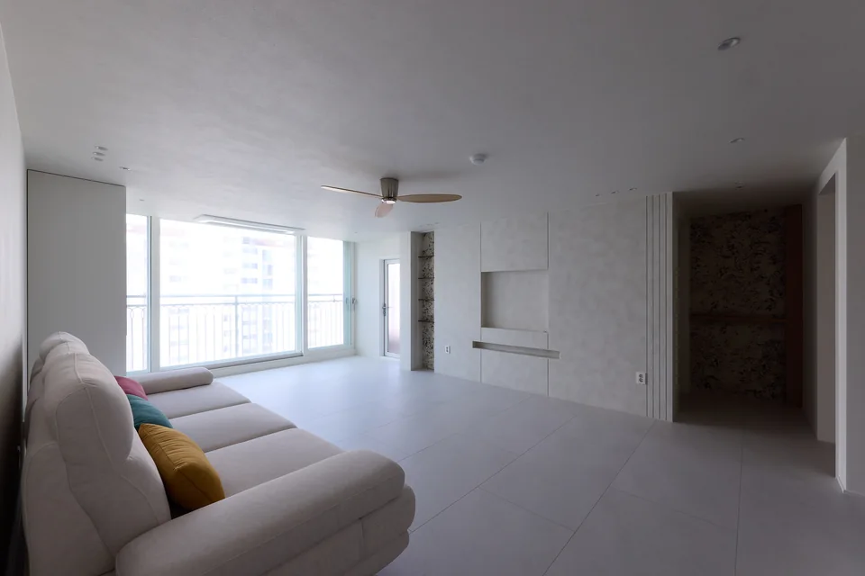
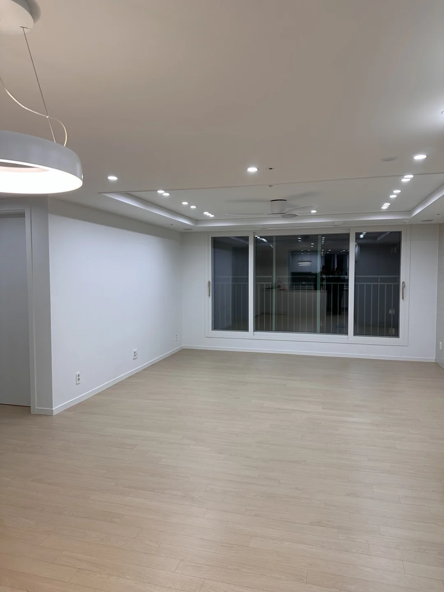
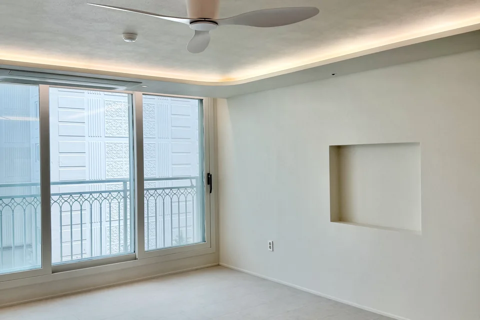
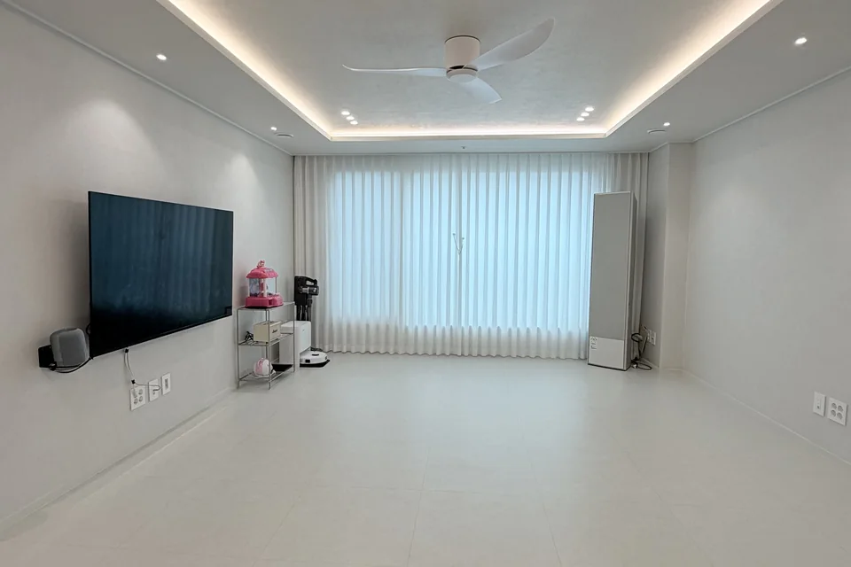
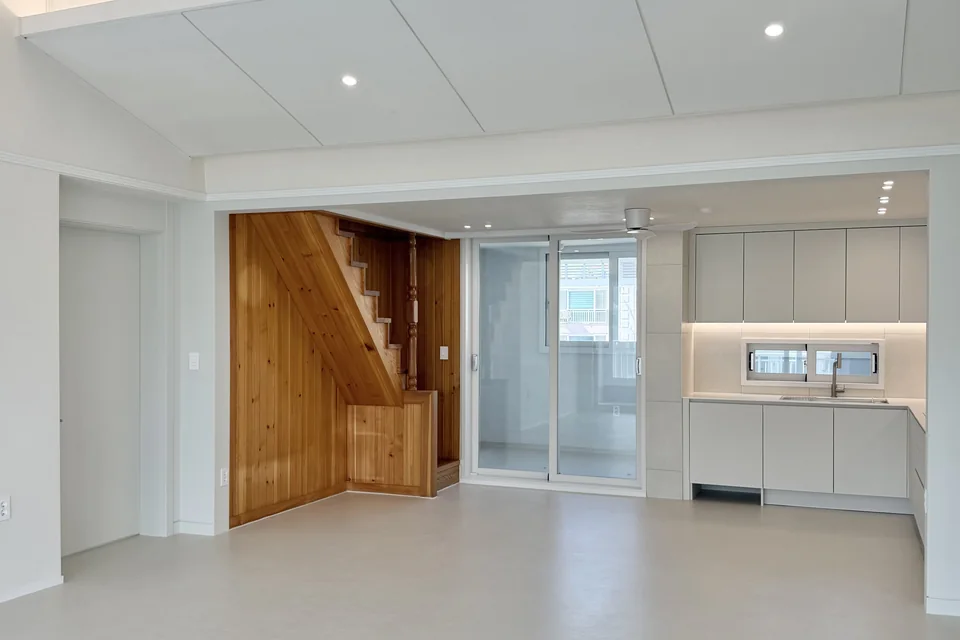
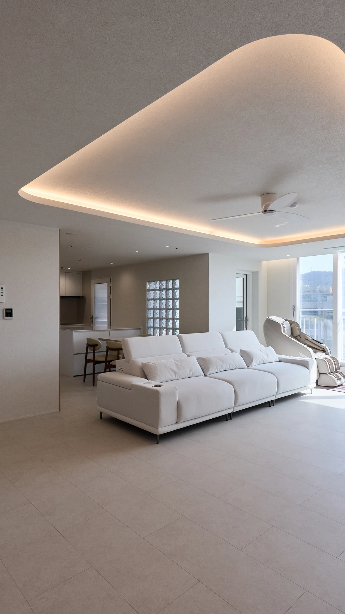

푸르지오캐슬 A단지 32평
수납 확대와 주방 개선 요청에 맞춰 화이트와 우드로 마감했습니다. 주방 전경·아일랜드·수납과 드레스룸을 함께 살펴보세요.
푸르지오캐슬 A단지 32평 시공 사진 보기같은 평형도 수납이 먼저인 집과 주방 구조가 먼저인 집의 공사는 달라집니다. 다함 인테리어가 시공한 구미 아파트 6곳에서 우리 집과 비슷한 조건을 찾아보세요.
아래 기간은 각 현장에서 실제로 진행한 일정입니다. 우리 집의 기간은 현재 상태와 공사 범위, 자재 및 입주 일정 등을 확인한 뒤 협의합니다.
| 현장·평형 | 실제 기간 | 중점적으로 볼 부분 |
|---|---|---|
| 푸르지오캐슬 A단지 32평 | 4주 | 밝은 분위기와 주방·수납 |
| 산동 쌍용예가 34평 | 3주 | 거실·주방·현관의 완공 모습 |
| 임은동 코오롱하늘채 35평 | 4주 | 거실과 현관의 수납 |
| 옥계 e편한세상 35평 | 3주 | 주방 구조와 다이닝 연결 |
| 봉곡 현진에버빌 38평 탑층 | 4주 | 탑층의 샷시 교체와 화이트톤 |
| 옥계 삼구트리니엔 51평 | 6주 | 거실 조명과 공간의 연결 |
임은동 코오롱하늘채는 수납 확보가 중심이었고, 옥계 e편한세상은 주방 구조 변경과 이사 일정이 중요했습니다. 평형이 같아도 필요한 공사와 일정이 다르므로, 사진 속 스타일과 함께 바꿀 공간을 비교하는 것이 좋습니다.
32평부터 51평까지 평형순으로 정리했습니다. 각 현장의 실제 완공 사진과 시공 설명으로 연결됩니다.

수납 확대와 주방 개선 요청에 맞춰 화이트와 우드로 마감했습니다. 주방 전경·아일랜드·수납과 드레스룸을 함께 살펴보세요.
푸르지오캐슬 A단지 32평 시공 사진 보기
거실과 주방, 현관을 공간별 사진으로 확인할 수 있습니다. 비슷한 평형의 사례와 비교하며 우리 집에서 바꿀 공간을 정리해 보세요.
산동 쌍용예가 34평 시공 사진 보기
수납공간을 최대한 확보하려는 요청을 중심으로 구성했습니다. 거실 벽면과 현관 수납의 위치, 주변 공간과의 연결을 확인하세요.
임은동 코오롱하늘채 35평 시공 사진 보기
급한 이사 일정과 주방 구조 변경이 중요한 현장이었습니다. 거실·주방·다이닝의 연결과 침실·욕실 마감을 함께 확인하세요.
옥계 e편한세상 35평 시공 사진 보기
단열을 중요하게 생각한 요청에 따라 샷시를 교체한 현장입니다. 화이트톤 거실·주방과 공간별 완공 사진을 살펴보세요.
봉곡 현진에버빌 38평 탑층 시공 사진 보기
거실의 곡선과 간접조명, 주방의 우드·화이트, 복도 수납을 연결했습니다. 같은 공간의 조명 ON/OFF 사진을 비교할 수 있습니다.
옥계 삼구트리니엔 51평 시공 사진 보기계속 쓸 소파·침대·가전의 크기와 위치, 벽과 바닥을 바꿀 범위를 정리하세요. 조명 위치와 이동 동선도 함께 확인합니다.
조리 공간, 냉장고와 가전 배치, 식탁 위치, 부족한 수납을 적어보세요. 구조 변경이 필요한지, 기존 배치를 유지할지는 현장에서 검토합니다.
누수·배수·결로처럼 현재 겪는 불편이 있다면 먼저 알려주세요. 사진만으로 단정하기 어려운 기존 상태와 필요한 공사 범위는 현장 확인을 거칩니다.
처음부터 모든 내용을 정할 필요는 없습니다. 온라인 상담은 성함과 연락처, 개인정보 동의로 신청하고, 아래 자료는 준비되는 만큼 함께 알려주세요.
어떤 공간이 불편한지, 무엇을 바꾸고 싶은지와 희망 일정을 함께 정리합니다.
사진만으로 확인하기 어려운 치수와 기존 상태를 살펴보고 공사 범위를 검토합니다.
공사 범위와 계획에 맞춰 견적을 제안하고 일정을 협의합니다. 견적·공사 기간 준비사항도 확인하세요.
같은 평형 기준의 총액만 비교하기보다 철거·창호·설비·마감·가구 등 포함된 작업과 제외된 작업을 확인하세요. 실제 필요한 범위를 맞춰놓아야 서로 다른 제안을 비교하기 쉽습니다.
사진은 원하는 분위기를 정하는 참고 자료입니다. 실제 집의 구조와 치수, 사용할 가전과 필요한 수납에 맞춰 적용할 내용을 상담합니다.
공사 내용을 누구와 협의하는지, 자재·마감 변경이 생기면 어떻게 확인하는지, 완공 점검과 A/S 안내는 어떻게 받는지 상담 때 함께 확인하세요.